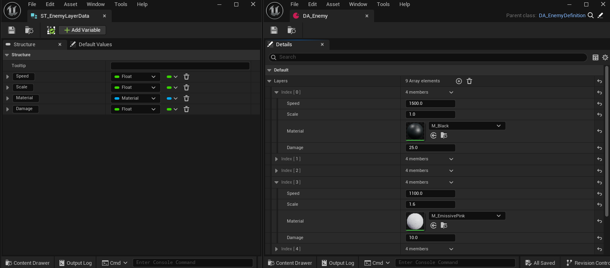
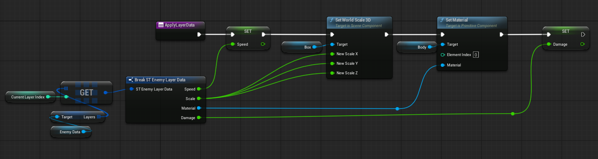
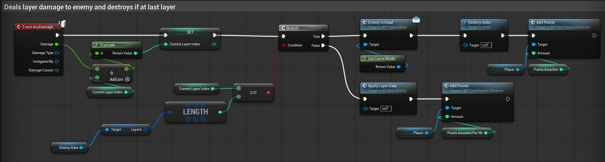

Data-Driven Enemy Layer System
Unreal Engine 5 | Blueprint & Data-Driven Architecture
Overview
Engineered a modular, data-driven enemy mutation framework allowing runtime state transitions across multiple layer tiers. The system uses a centralised data asset structure to dynamically adjust enemy stats, mesh components, and behavior profiles without hardcoding individual enemy variants.
Key Technical Features
- Data-Driven Layer Architecture: Leverages Unreal Engine Data Assets (Primary Data Assets) to encapsulate tier parameters (health multipliers, speed offsets, damage multipliers, material instances)
- Dynamic State Mutation: Encapsulates logic for transitioning enemies sequentially between various tiers.
- Performance Optimisation: Minimises runtime object instantiation by mutating component parameters on existing actors rather than spawning new dynamic classes.
Architecture Breakdown
The system is built on a modular, data-driven framework separating configuration data from actor execution logic. Below is the breakdown of its core components:
1. Data Schema & Primary Data Asset (ST_EnemyLayerData & DA_Enemy)

To decouple configuration data from actor execution logic, the system uses a custom structure (ST_EnemyLayerData) paired with a Primary Data Asset class (DA_EnemyDefinition)
Instead of hardcoding tier values inside the enemy blueprint, all tier-specific parameters such as Speed, Scale, Material Instances, and Damage Thresholds are authored inside modular data asset instances (DA_Enemy). This allows multiple enemy variants to share the same base behavior while utilising entirely different data recipes without inflating actor memory.
2. Runtime Component Mutation (ApplyLayerData)

Housed within the base enemy actor (BP_BaseEnemy), this function handles runtime state mutation. When triggered, it queries the assigned DA_Enemy data asset using the Current Layer Index, breaks the structure data, and dynamically updates the actor's world scale, mesh material instance, and movement speed parameters on the active component instances without respawning the actor.
3. Damage Handling & Layer Progression (Event AnyDamage)

Intercepts incoming damage events, evaluates the array length of the active data asset, and increments the layer index. A branch node checks if the final layer has been breached; if false, it triggers ApplyLayerData to progress the enemy to the next tier. If true, it executes game mode point awards and safely destroys the actor.